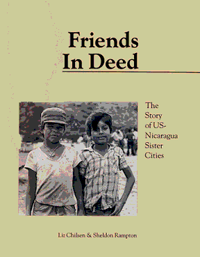
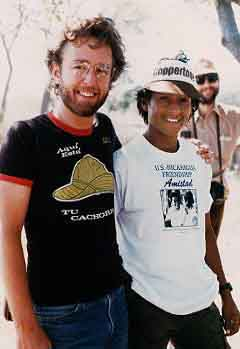

|  |
Friends In DeedThe Story of US-Nicaragua Sister Citiesby Liz Chilsen and Sheldon RamptonPublished by the |
|
Publication Date: 1988 Order it online from amazon.com Or order it directly by sending $13/book (includes postage and handling) to:
|
Friends In Deed: the Story of US-Nicaragua Sister Cities is a history of the US-Nicaragua "citizen diplomacy" movement. It tells the story of of everday citizens in the United States who opposed their government's policy of military intervention in Central America by creating their own foreign policy at the municipal level, acting constructively in cooperation with the people of Nicaragua to help rebuild homes, schools and shattered lives. In addition, the book includes a directory of over 180 organizations participating in "citizen diplomacy" activities in Central America, along with how-to information about fundraising, volunteer recruitment, media outreach and public relations for small organizations.
| Dave Merritt (pictured here on the left) was a staff member for the Wisconsin Coordinating Council on Nicaragua (WCCN) during my first trip there, which WCCN sponsored in 1985. We had a memorable encounter with Pedro Zuñiga (pictured on the right), a young man who had just completed a tour of duty with the Sandinista army. I wrote about the encounter in my first book, Friends In Deed: the Story of US-Nicaragua Sister Cities. |  |